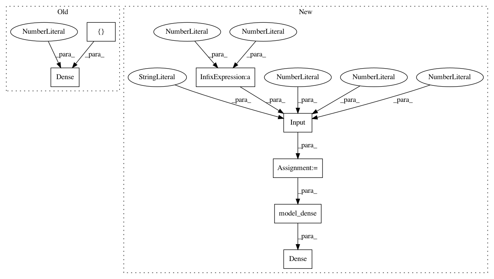

fa3789e8fb8dafee87c3bd81365d71c3cebb1270,dlpy/tests/test_network.py,TestNetwork,test_submodel_multiple_inputs_network,#TestNetwork#,257
Before Change
dense7 = Dense(n =190, name = "cat1")([dense3, dense6])
model_dense = Model(self.s, inputs = [inputs1, inputs2], outputs = [dense7])
dense7 = Dense(20, name = "d7", src_layers = [model_dense])
output1 = OutputLayer(n=10, name="OutputLayer_1", src_layers=dense7)
model = Model(self.s, inputs=[model_dense], outputs=output1)
model.compile()
model.print_summary()
After Change
dense7 = Dense(n =190, name = "cat1")([dense3, dense6])
model_dense = Model(self.s, inputs = [inputs1, inputs2], outputs = [dense7])
input3 = Input(1, 53, 53, scale = 1.0 / 255, name = "InputLayer_3")
input4 = Input(1, 53, 53, scale = 1.0 / 255, name = "InputLayer_4")
out = model_dense([input3, input4])
dense7 = Dense(20, name = "d7")(out)
output1 = OutputLayer(n=10, name="OutputLayer_1")(dense7)
model = Model(self.s, inputs=[input3, input4], outputs=output1)
model.compile()
model.print_summary()
In pattern: SUPERPATTERN
Frequency: 3
Non-data size: 7
Instances
Project Name: sassoftware/python-dlpy
Commit Name: fa3789e8fb8dafee87c3bd81365d71c3cebb1270
Time: 2019-03-05
Author: 34170572+wenyushi@users.noreply.github.com
File Name: dlpy/tests/test_network.py
Class Name: TestNetwork
Method Name: test_submodel_multiple_inputs_network
Project Name: sassoftware/python-dlpy
Commit Name: fa3789e8fb8dafee87c3bd81365d71c3cebb1270
Time: 2019-03-05
Author: 34170572+wenyushi@users.noreply.github.com
File Name: dlpy/tests/test_network.py
Class Name: TestNetwork
Method Name: test_submodel_as_input_network
Project Name: sassoftware/python-dlpy
Commit Name: fa3789e8fb8dafee87c3bd81365d71c3cebb1270
Time: 2019-03-05
Author: 34170572+wenyushi@users.noreply.github.com
File Name: dlpy/tests/test_network.py
Class Name: TestNetwork
Method Name: test_submodel_as_inputs_network